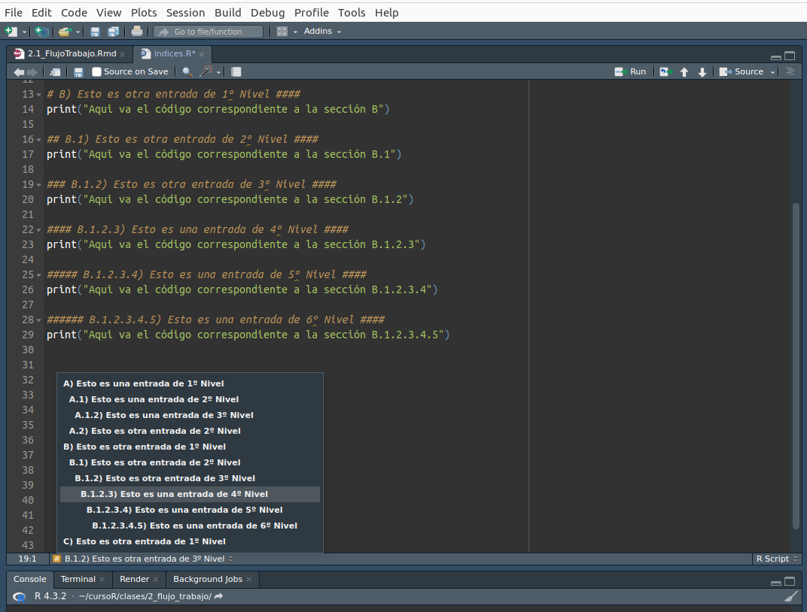
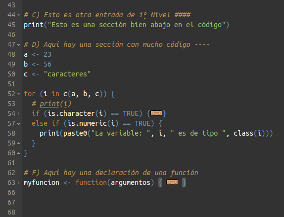
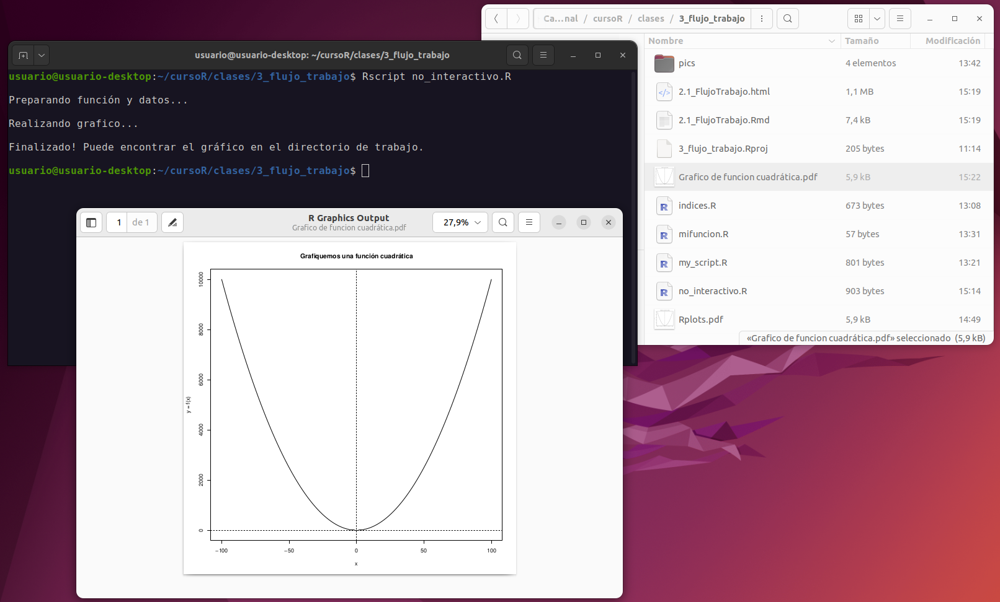

Flujo de Trabajo en R
Ante todo, orden y organización
Cuando trabajamos con R (pero esto es válido también para cualquier otro proyecto de código o análisis de datos) debemos intentar ser sumamente organizados. Disponer de un sistema que permita identificar rápidamente cuales son las entradas (datos) y las salidas (resultados de análisis, gráficos, etc.), así como los pasos intermedios, si existieran, nos facilitará mucho nuestro trabajo. Ya hemos visto que en RStudio podemos crear Proyectos que nos ayudarán a mantener todo más organizado. A continuación veremos algunas otras formas de comentar e indexar el código en sí mismo para poder lograr una mayor organización y claridad.
Comentarios e índices
Como hemos visto previamente, cuando estemos trabajando dentro de RStudio la mayor parte del tiempo estaremos editando un archivo de texto con nuestro código. A este archivo que contiene todas las instrucciones, desde la carga de paquetes necesarios, la carga de datos, la manipulación de los mismos, la ejecución de análisis, las instrucciones para realizar gráficos y la exportación de los mismos, etcétera, lo llamamos script o rutina.
Ademas del código propiamente dicho, ningún script está completo si no está correctamente anotado, es decir, si no contiene texto humanamente legible que permita seguir qué es lo que se está haciendo en el mismo. La forma de introducir un comentario en el código es anteponer # a la linea en cuestión. De esta forma, el interprete de código evitará su ejecución.
# Esto es un comentario y no se ejecutará
print("Esto es código que sí será ejecutado")[1] "Esto es código que sí será ejecutado"Otra función interesante relacionada a los comentarios, es que dentro de RStudio se puede generar índices de contenido para saltar de una parte a otra del código fácilmente. Para generarlos, es necesario encerrar la entrada del índice con caracteres #. El número de caracteres # del inicio irán indicando el nivel de la entrada (de 1º a 6º), mientras que al final siempre debe haber 4 caracteres # para que la línea sea reconocida como una entrada del índice. Esto irá produciendo un índice al que podremos acceder desde el menú desplegable Contenidos, ubicado abajo a la izquierda en el editor de scripts, o desplegando el índice de contenidos del archivo con el botón Outline ubicado en la parte superior derecha del editor.

Click en la imagen para agrandar.
De igual forma, cada entrada del índice nos permitirá plegar o colapsar, las líneas de código que contenga. Esto puede ser útil para ocultar algunas secciones extremadamente largas o para secciones que, al momento de editar el script, no sean de interés. Esta funcionalidad de colapsar líneas, también estará disponible para bloques de código de control de flujo y para bloques que definan funciones. En el día 3 veremos específicamente como usar estas estructuras de control de flujo y como crear funciones, por el momento, prestemos atención en la captura siguiente a los números de línea del editor y a las lineas dónde vemos el botón , indicando que es un bloque de código colapsado.

Click en la imagen para agrandar.
Ejercicio 1
Cree una rutina dentro de dia1 y cree un índice que contenga títulos de 1º, 3º, 5º y 6º nivel.
Carga de funciones externas
Más adelante veremos en profundidad como se construye una función, por el momento solo digamos que una función es una forma de personalizar la ejecución de código para una función específica que nosotros diseñamos. Para evitar repetir en todos nuestros scripts estas funciones personalizadas, podemos generar una biblioteca propia de funciones desde donde las cargaremos. Así mismo, puede que algún/a colega haya diseñado una función y nos la envíe, en cuyo caso también podemos cargarla sin necesidad de copiar y pegar la misma en nuestro script.
Para cargar una función externa, por supuesto, primero debemos disponer de una. Para esta demostración utilizaremos una función muy sencilla que calcula una función cuadrática con un solo término, es decir, es una función de tipo y(x) = x²:
# Función cuadrática
fun_cuad <- function(x) { x^2 }
# Probar la función
fun_cuad(c(1,2,3,4))[1] 1 4 9 16Si disponemos de una o múltiples funciones escritas en un archivo, podemos cargarlas directamente con la función source().
# Cargar la función guardada en el archivo "mifuncion.R"
source("mifuncion.R")
# Probar la función
fun_cuad(c(1,2,3,4))[1] 1 4 9 16De igual forma, también podríamos vincular directamente a un archivo online, pasándole a source() la URL al código fuente. En este caso sería:
URL <- "https://raw.githubusercontent.com/pastornicolas/fundamentos_R/7abf94fd87129b5433c5ac70af1194e822b2afb6/dia1/mifuncion.R"
source(URL)Ejercicio 2
Descargue el archivo con la función al directorio de trabajo correspondiente a dia1 y cárguela utilizando source(). Pruebe su correcto funcionamiento para los valores:
1, 2, 3, 4
1, 10, 100
Trabajando sin interfaz gráfica
En algunas ocasiones deberemos usar R de una forma no interactiva, esto es, daremos la instrucción para que se ejecute un script dado pero ya no viéndolo dentro de RStudio y corriendo línea por línea, sino desde alguna herramienta propia del Sistema Operativo. Una situación típica de esto es si alguna vez trabajamos con R dentro de un cluster de cómputo de alto rendimiento, como por ejemplo en el CCAD (Centro de Cómputo de Alto Desempeño) de la UNC. Otras situaciones puede ser incorporar algún procesamiento con R dentro un pipeline de análisis que utilice otros lenguajes en combinación a R (e.g. BASH, python, etc.)
Existen múltiples formas, dependiendo del Sistema Operativo que estemos utilizando, para ejecutar un script de R desde el propio sistema, pero la forma más sencilla es invocar al archivo ejecutable de R llamado Rscript. En sistemas Windows, típicamente se encuentra en “C:\Program Files\R\R-version\bin\x64\” y debemos ejecutarlo desde el “Simbolo del sistema”. En sistemas GNU/Linux basta con abrir la terminal de nuestra preferencia y ejecutar:
Rscript mi_script.R

Click en la imagen para agrandar.
Ejercicio 3
Descargue el archivo con el script para graficar la función cuadrática al directorio de trabajo correspondiente a dia1. Ejecute el script en su sistema por fuera de RStudio y chequee el correcto funcionamiento (i.e. se debería ver en la consola los mensajes de salida y se debería crear un archivo PDF con el gráfico en el directorio donde se ejecutó).
Ejercicio 4
Abra el script que recién ejecutó en el editor de RStudio. Intente interpretar que hace cada línea, recuerde usar las función help() o ? para acceder a las ayudas internas de las funciones. No se preocupe si por el momento no lo entiende completamente, para cuando este curso termine no habrá ni una sola de esas líneas que no sea capaz de interpretar.
Algunas máximas para recordar a la hora de programar en R
Explícito es mejor que implícito. Ante la duda, declaremos explícitamente todo lo que hacemos. Esto puede ser un poco engorroso, pero nos ayudara sobre todo en la etapa de aprendizaje inicial.
Orden, orden, orden… Intentar hacer el trabajo de forma sistemática desde el comienzo siempre es más fácil que luego intentar ordenar algo caótico cuando nos toque publicar y compartir nuestro código.
Un breve descanso a tiempo puede significar un ahorro de horas de frustración. En ocasiones algo no anda y no podemos encontrar el error fácilmente. En esos momentos, cuando ya leímos de arriba a abajo varias veces nuestro código y seguimos sin poder encontrar el error, mejor es ir a prepararse un mate, dar una vuelta a la manzana, o lo que fuera. La gran mayoría de estos errores difíciles se encuentran y resuelven luego de descansar un poco.
No estamos solos/as. Si lo anterior no funciona, recordemos que siempre podemos acudir a un foro web, a una IA, o a un/a colega que pueda revisar nuestro código. Generalmente el problema que hace días no podemos solucionar, un par de ojos frescos y sin frustración acumulada lo encuentran en cuestión de minutos, o incluso en un simple golpe de vista.
Rutas, rutas, rutas… Dicho lo anterior, en general la mayoría de los problemas surgen por no escribir correctamente las rutas a archivos de entrada o salida.
Paréntesis, corchetes y llaves… Dicho lo anterior, la segunda mayoría de problemas surgen porque no respetamos algún requisito de la sintaxis, muy probablemente abrimos más paréntesis (o corchetes o llaves) de los que cerramos, o insertamos un comentario sin querer en algún lado interrumpiendo un proceso, etc.
Nada mejor que aprender haciendo. Intentar aprender a programar sin tener un objetivo claro es mucho más difícil. Si ahora mismo no tenemos algo concreto, desempolvemos esos análisis que hicimos en otro software hace un tiempo e intentemos replicarlos en R, o busquemos el tutorial de algún paquete específico que nos interese y lo estudiemos. Pero no paremos de usar el lenguaje, al menos, hasta que sintamos que tenemos cierta holgura en su uso.
En R, y en programación en general, existen múltiples formas de hacer lo mismo. Es imposible conocer todas las formas, y obviamente, cada quién irá encontrando aquellas que le resulten mejores (e incluso a lo largo del tiempo verán que irán cambiando). Si el código hace lo que supone que tiene que hacer, entonces está bien. Siempre habrá tiempo para perfeccionar la eficiencia y la estética.
En ocasiones puede ser muy frustrante que algo no nos salga, evitemos la tentación de volver a esa planilla de cálculo, o a ese software donde antes nos salía todo. Todo el tiempo que invirtamos va a dar muchísimos frutos en el futuro.
R, o el lenguaje que aprendamos a continuación, es una herramienta fantástica pero no reemplaza de ninguna manera la formación que tenemos. Por más sofisticados que sean nuestros análisis, al fin y al cabo, será nuestro criterio profesional el que decida si el resultado es o no interesante. Nunca nos olvidemos que lo más importante en nuestro trabajo son las preguntas que intentamos responder, no los medios que usamos para hacerlo.